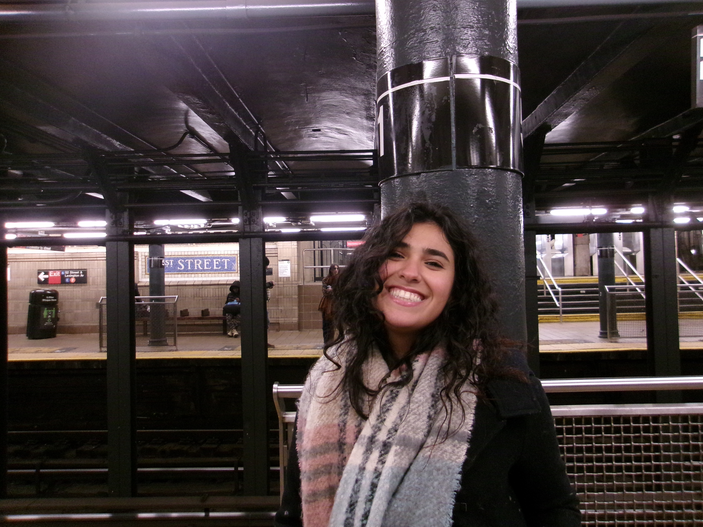

allo, I’m Noura!
I'm a Marine Science major with a passion for coral restoration and environmental conservation. I'm obsessed with all the little and big things that make life interesting like knitting, sourdough, traveling, animals, art, books, and whatever random obsession has captured my attention that week. This site is a small collection of things I'm curious about at any given moment. I've always been fascinated by people, cultures, nature, and the whimsical little ways life surprises you. Whether I'm learning about coral reefs, exploring a new place, or diving into a topic I never knew about, I love discovering something new and seeing the world from a different perspective <3
